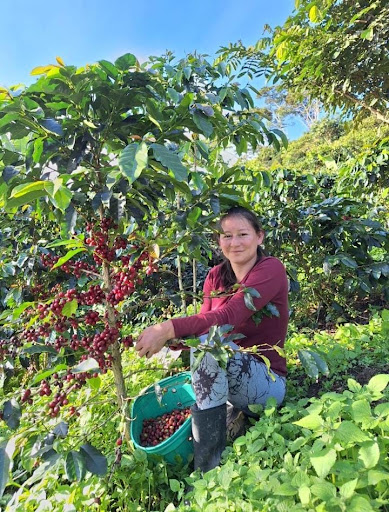
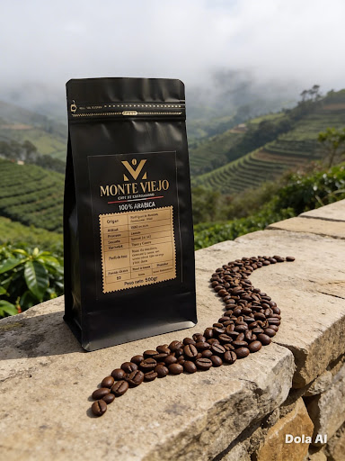
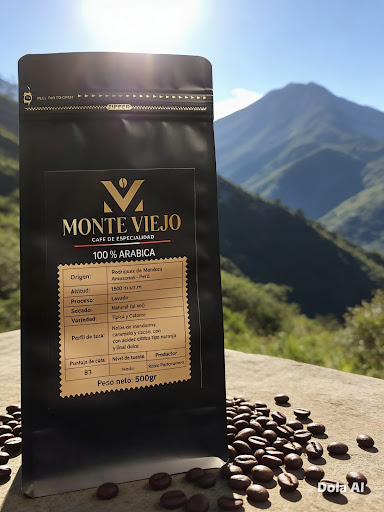

Cafe verde
Exportacion
Tostadores
Ideal para exportacion o tostadores que buscan origen Amazonas.

Cafe familiar de Rodriguez de Mendoza, Amazonas
Cafe de especialidad nacido en montanas de Amazonas, trabajado por segunda generacion de productores.
Pedir por WhatsAppNuestra historia nace en las montanas de Rodriguez de Mendoza, Amazonas, donde cafe ha sido parte de nuestra familia por generaciones.
Somos segunda generacion de productores, comprometidos con cultivo responsable, respeto por suelo, agua y ecosistema que nos rodea.
Cada cosecha se trabaja con dedicacion. Seleccionamos cuidadosamente granos para garantizar cafe de especialidad de alto nivel.
Proceso continua en Lima, donde tostamos para asegurar frescura y resaltar mejores notas de cada lote. Mas que vender cafe, compartimos esfuerzo, tradicion y orgullo de origen.
Vision: convertirnos en simbolo del cafe de especialidad de Amazonas, promoviendo cultura cafetera responsable, sostenible y orgullosa de su origen.



Cafe verde, grano tostado y cafe molido
Ideal para exportacion o tostadores que buscan origen Amazonas.

Grano tostado en Lima para conservar frescura, aroma y perfil de lote.

Listo para disfrutar, conservando perfil de origen de Rodriguez de Mendoza.
Metodos simples para resaltar frescura, aroma y perfil de origen del cafe Monte Viejo.
Consulta cosechas, tuestes y disponibilidad de productos Monte Viejo por WhatsApp.
Contactar por WhatsApp